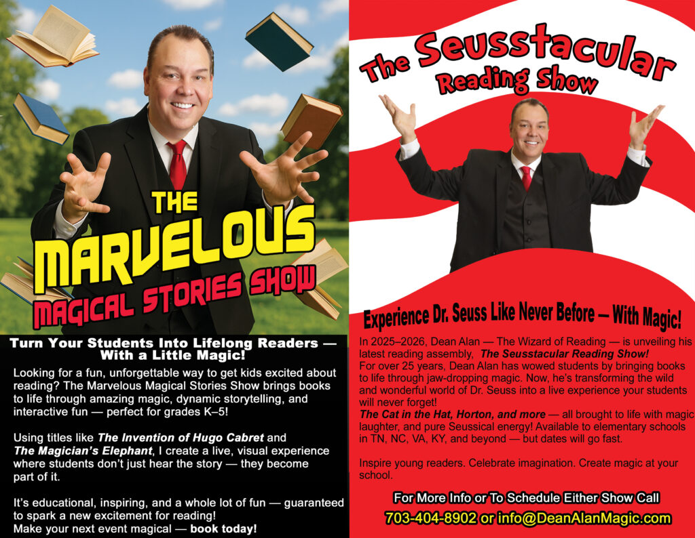
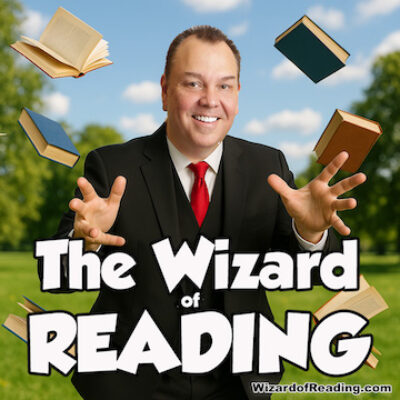
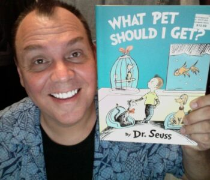

Make Reading Unforgettable with Dean Alan, The Wizard of Reading!
Make Reading Unforgettable with Dean Alan, The Wizard of Reading!
If you want students to be fired up about reading, you need more than an ordinary assembly, you need Dean Alan, America’s one‑and‑only Wizard of Reading.
Dean Alan transforms reading into a full‑blown adventure. Books burst to life through jaw‑dropping magic, laugh‑out‑loud storytelling, and nonstop audience participation. Kids don’t just watch the show, they feel the magic of reading in every moment.
Two Blockbuster Reading Shows
The Marvelous Magical Stories Show
Beloved stories leap off the page as Dean Alan blends astonishing magic with powerful reading‑themed lessons. The featured books rotate often, keeping the show fresh, surprising, and unforgettable.
The Seusstacular Reading Show
Dive headfirst into the wild, whimsical world of Dr. Seuss! This high‑energy, laugh‑packed show delivers big surprises, big fun, and one big message: reading is pure magic.
Why Schools & Libraries Love Dean Alan
Elementary‑perfect programming that captivates every grade
Daytime assemblies and family night events available
Built to inspire lifelong readers through excitement, imagination, and unforgettable moments
Ready to Make Your Next Event Magical?
Bring the Wizard of Reading to your school or library and watch students fall in love with books, one spellbinding show at a time.

Dean Alan’s calendar fills up fast, don’t miss your chance to bring this one-of-a-kind experience to your students!
Quote From A School
“Thanks for making our Title 1 Family Literacy Night a success! The parent evaluation forms were very positive: ‘He made reading fun’ “He showed enthusiasm tor reading’. ‘He really made the books sound interesting and he was funny and entertaining’ , ‘It was a very entertaining way lo share stories.’ Eileen Burgwyn English & Reading Coordinator k-12, Fauquier County Public Schools, Warrenton, VA
✨ Book your date today and turn your next event into a magical celebration of reading! Just fill out the form below for more info, availability, and pricing!

newWizard2025 copy
ABOUT DEAN ALAN
With over 25 years of experience captivating audiences, Dean Alan is a nationally recognized school assembly performer, known for inspiring young readers with the magic of storytelling. Dean has toured extensively throughout the Mid-Atlantic region, delivering unforgettable reading assemblies to thousands of students. Now based in Tennessee, he’s expanding his reach to Kentucky and beyond, bringing his award-winning shows to even more schools and communities. A full-time professional performer, Dean Alan’s talents have been showcased on television and even at the prestigious White House in Washington, D.C. Beyond the stage, Dean is also an accomplished portrait artist and a respected magic historian, blending his passion for the arts, education, and entertainment into every show he creates. When you invite Dean Alan to your school, you’re not just getting a magic show, you’re giving your students an experience they’ll remember for a lifetime.

W
Another Quote From A School
“The Wizard of Reading combined clever tricks and switcheroos to entertain our audience, at the same time giving lots of interesting information about Dr. Seuss and his stories. We got great feedback trom kids and parents. Its delightul!” Pat Gleason, ESOL Teacher, Keene Mill Elementary Springfield VA
Yet Another Quote From A School
“The Wizard of Reading, Dean Alan, was phenomenal! The interaction with the students was magical! Our K-5 students were mesmerized and their parents loved it! He even personalized it for us by including a book that our families had just finished reading at home!!!! He touched us all by sharing his own childhood struggle with reading. He is magical for all ages!” Rebecca Worrell, Reading Specialist, Carrsville Elementary